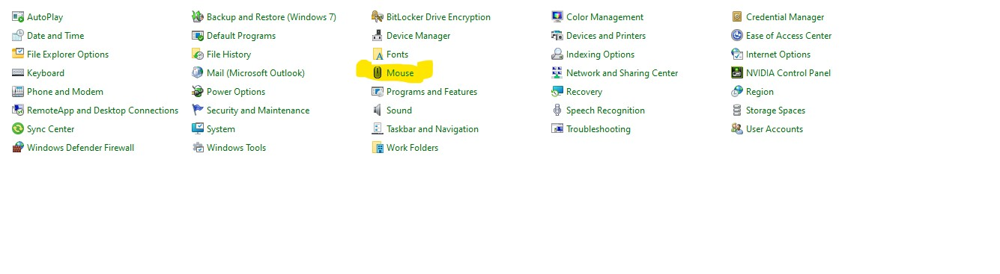
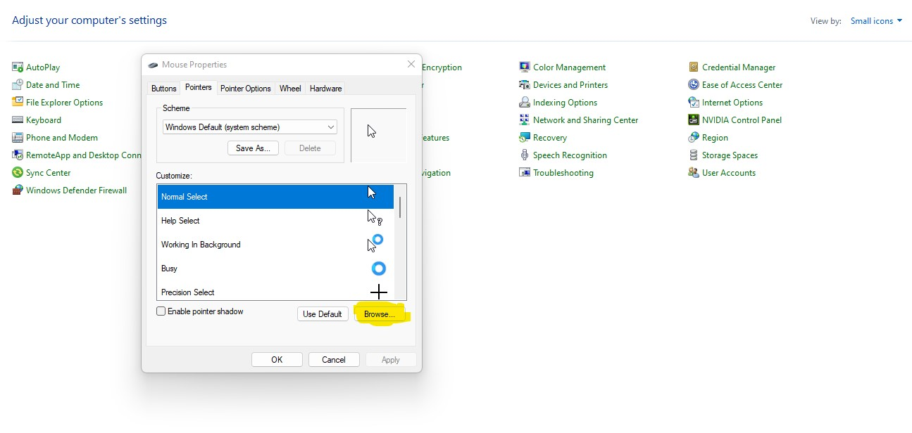
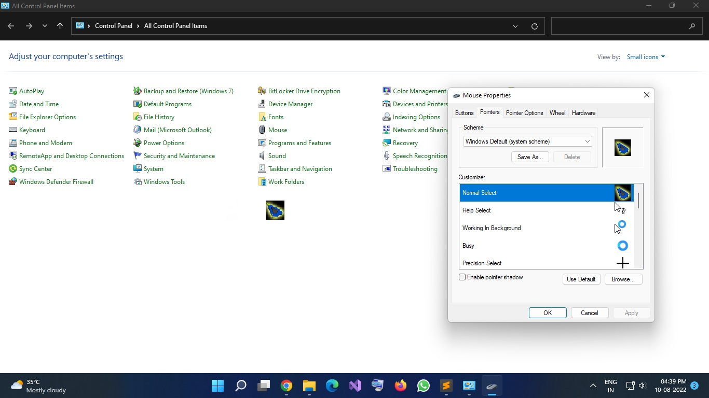

|
|
HOME | Contact us | About us | Login |
 Please click on the link to open the video 👈
Please click on the link to open the video 👈
1. Download an image of cursor. 2.Convert it .jpg into .cur 3. Go to the Control Panel,then click on the mouse option.  4. Click on Pointers on the top of dialog box,then click on Browse option.  5. Select the cursor image and click on open option,then click on apply. 